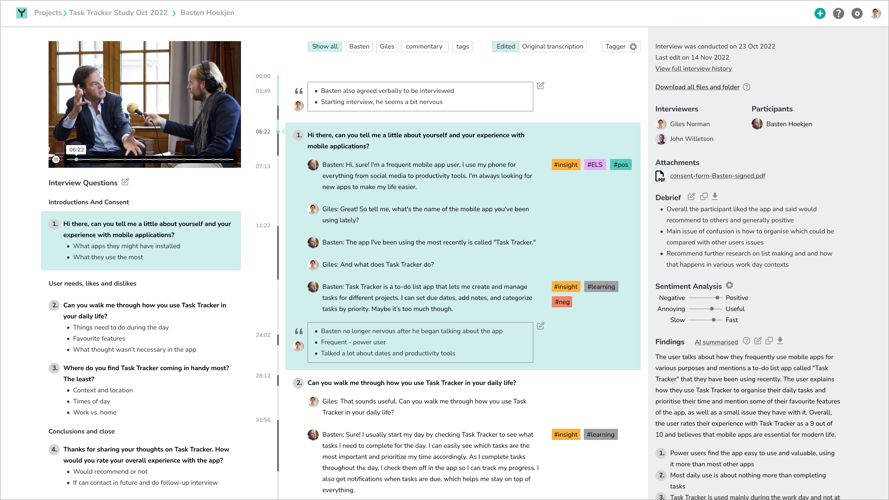

Overview & Challenge
Yleos was interested in reexamining their current product and addressing concerns about how to deal with unresolved issues on the roadmap, namely how to handle transcripts and how to integrate video playback which was not yet in any interface they had.
Secondarily they were interested in opporunties with using Machine Learning (ML) and AI to meet user needs with interveiwing, namely analysis and gathering findings, as well as cleaning up transcriptions.
Role & Approach
My role on Yleos was to design a user interface that addresses and distills leadership’s needs and balances them with user feedback while pointing to new product possibilities.
Results
- Overall more readable and balance interface with a more comprehensive UI grid and implemented more accessibility best practices
- Reorganised the timeline interface to integrate transcripts to utilise Yleos’s unique proposition of being able to tie everything in the interview recording to a question and answer structure
- Designing in features that could utilise ML/AI that would answer interiewers and user researchers needs in terms of debriefing and analysis and integrating that into a single, well organised video and transcript interface

Work in progress
- Designing a recording and writing mode to work with the new video and transcript view
- Design of after interview debrief feature
- Service and interface design for multi-interviewer scenario involving multiple roles timeline marking